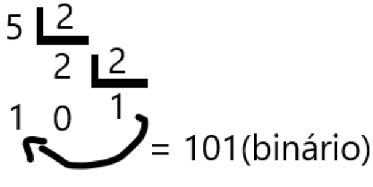

Portfólio de Matemática
Mateus Mazon Parcianello

|
Portfólio de Matemática |
Mateus Mazon Parcianello |
|
|---|
O primeiro conteúdo que eu escolhi foi o de sistemas de numeração, binário,
decimal,
octal e hexadecimal,
que são os principais para a informática, sendo o binário o mais
importante e utilizado desses,
também o que falarei com mais ênfase aqui.
| Sistemas de numeração são conjuntos de símbolos usados para representar a quantidades numéricas. Podem ser de base 10, 3, 65, e por aí vai, porém o sistema de base 2(binário) é o principal. O sistema binário utiliza apenas dois números, o "1" e o "0", e com esses dois números conseguimos fazer diversas combinações entre eles para representar novos elementos. Por exemplo, se juntarmos 1 e 0 temos a representação do "2", se juntarmos 1 e 1 temos a representação do "3" e por aí vai. |
Outra coisa em que eu tive facilidade nesse conteúdo foram as conversões entre o
sistema binário
e os demais sistemas numéricos, os quais explicarei agora:
Para converter um sistema de base menor para um sistema de base maior faremos o
seguinte:
Pegando de base o número 1011(binario) e passando para decimal:
precisamos pegar e multiplicar o número por potências de sua mesma base, (nesse
caso binário,
então "2") e depois elevado conforme o número de sua posição,
sempre começando por 0, lembrando
que essa operação se faz de trás para frente. Conforme no exemplo:
Essa mesma conversão pode ser feita com os outros sistemas numéricos de base 8 e
de base 16 para base
10, apenas se mudando os valores. Exemplo: base 16 para base 10.
(imagem retirada do site:https://www.embarcados.com.br/conversao-entre-sistemas-de-numeracao/)
Agora temos outro caso, em que temos que converter um sistema de
base maior para um de base menor, e para isso faremos o seguinte:
Pegaremos de base o número 5 na base decimal e passando pra binário.
Precisamos pegar e dividir o número da base maior(5) pelo número
da base menor(binário, ou seja, "2"), sucessivamente até não ser mais possivel dividir
pelo sem se ter números quebrados, durante a divisão vamos guardar os números obtidos e
no final vamos juntar eles de trás para frente, conforme no exemplo:

O mesmo vale para converter base 10 para base 8 e base 16,
apenas mudando os valores. Exemplo: base 10 para base 8.
(imagem retirada do site:https://www.embarcados.com.br/conversao-entre-sistemas-de-numeracao/)
Tive facilidade nesse conteúdo pois: Era algo que eu sempre acompanhava e como envolve a área em que eu tenho interesse acabou sendo fácil pesquisar e apender sobre, além de não ser tão complicado, parece difícil no começo mas depois que você decora algumas coisas fica fácil.
Alguns vídeos sobre os conteúdos que abordei:
Sistemas de numeração
Sistemas de numeração e conversões de bases